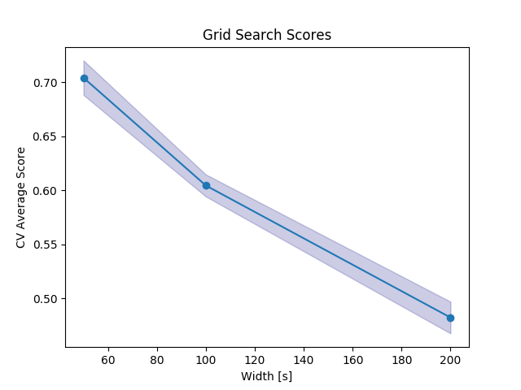

Note
Click here to download the full example code
Hyperparameter Selection 2¶
This example demonstrates how to do model selection in a pipeline where segments are learned directly by a neural network
Out:
Fitting 3 folds for each of 3 candidates, totalling 9 fits
[Parallel(n_jobs=1)]: Using backend SequentialBackend with 1 concurrent workers.
[CV] crnn__width=seg__width, seg__overlap=0.0, seg__width=50 .........
[CV] crnn__width=seg__width, seg__overlap=0.0, seg__width=50, total= 35.4s
[Parallel(n_jobs=1)]: Done 1 out of 1 | elapsed: 35.4s remaining: 0.0s
[CV] crnn__width=seg__width, seg__overlap=0.0, seg__width=50 .........
[CV] crnn__width=seg__width, seg__overlap=0.0, seg__width=50, total= 34.5s
[CV] crnn__width=seg__width, seg__overlap=0.0, seg__width=50 .........
[CV] crnn__width=seg__width, seg__overlap=0.0, seg__width=50, total= 28.0s
[CV] crnn__width=seg__width, seg__overlap=0.0, seg__width=100 ........
[CV] crnn__width=seg__width, seg__overlap=0.0, seg__width=100, total= 22.0s
[CV] crnn__width=seg__width, seg__overlap=0.0, seg__width=100 ........
[CV] crnn__width=seg__width, seg__overlap=0.0, seg__width=100, total= 20.0s
[CV] crnn__width=seg__width, seg__overlap=0.0, seg__width=100 ........
[CV] crnn__width=seg__width, seg__overlap=0.0, seg__width=100, total= 22.7s
[CV] crnn__width=seg__width, seg__overlap=0.0, seg__width=200 ........
[CV] crnn__width=seg__width, seg__overlap=0.0, seg__width=200, total= 23.3s
[CV] crnn__width=seg__width, seg__overlap=0.0, seg__width=200 ........
[CV] crnn__width=seg__width, seg__overlap=0.0, seg__width=200, total= 27.2s
[CV] crnn__width=seg__width, seg__overlap=0.0, seg__width=200 ........
[CV] crnn__width=seg__width, seg__overlap=0.0, seg__width=200, total= 30.3s
[Parallel(n_jobs=1)]: Done 9 out of 9 | elapsed: 4.1min finished
# Author: David Burns
# License: BSD
import matplotlib.pyplot as plt
from keras.layers import Dense, LSTM, Conv1D
from keras.models import Sequential
from keras.wrappers.scikit_learn import KerasClassifier
from sklearn.model_selection import GridSearchCV
from seglearn.datasets import load_watch
from seglearn.pipe import Pype
from seglearn.split import TemporalKFold
from seglearn.transform import SegmentX
def crnn_model(width=100, n_vars=6, n_classes=7, conv_kernel_size=5,
conv_filters=10, lstm_units=10):
# create a crnn model with keras with one cnn layers, and one rnn layer
input_shape = (width, n_vars)
model = Sequential()
model.add(Conv1D(filters=conv_filters, kernel_size=conv_kernel_size,
padding='valid', activation='relu', input_shape=input_shape))
model.add(LSTM(units=lstm_units, dropout=0.1, recurrent_dropout=0.1))
model.add(Dense(n_classes, activation="softmax"))
model.compile(loss='categorical_crossentropy', optimizer='adam', metrics=['accuracy'])
return model
# load the data
data = load_watch()
X = data['X']
y = data['y']
# temporal splitting of data
splitter = TemporalKFold(n_splits=3)
Xs, ys, cv = splitter.split(X, y)
# create a segment learning pipeline
width = 100
pipe = Pype([('seg', SegmentX(order='C')),
('crnn', KerasClassifier(build_fn=crnn_model, epochs=1, batch_size=256, verbose=0))])
# create a parameter dictionary using the sklearn API
#
# you can also set a parameter to be always equal to another parameter, by setting its value to
# parameter name to track (this is an extension from sklearn)
#
# note that if you want to set a parameter to a single value, it will still need to be as a list
par_grid = {'seg__width': [50, 100, 200],
'seg__overlap': [0.],
'crnn__width': ['seg__width']}
clf = GridSearchCV(pipe, par_grid, cv=cv, verbose=2)
clf.fit(Xs, ys)
scores = clf.cv_results_['mean_test_score']
stds = clf.cv_results_['std_test_score']
plt.plot(par_grid['seg__width'], scores, '-o')
plt.title("Grid Search Scores")
plt.xlabel("Width [s]")
plt.ylabel("CV Average Score")
plt.fill_between(par_grid['seg__width'], scores - stds, scores + stds, alpha=0.2, color='navy')
plt.show()
Total running time of the script: ( 4 minutes 47.689 seconds)